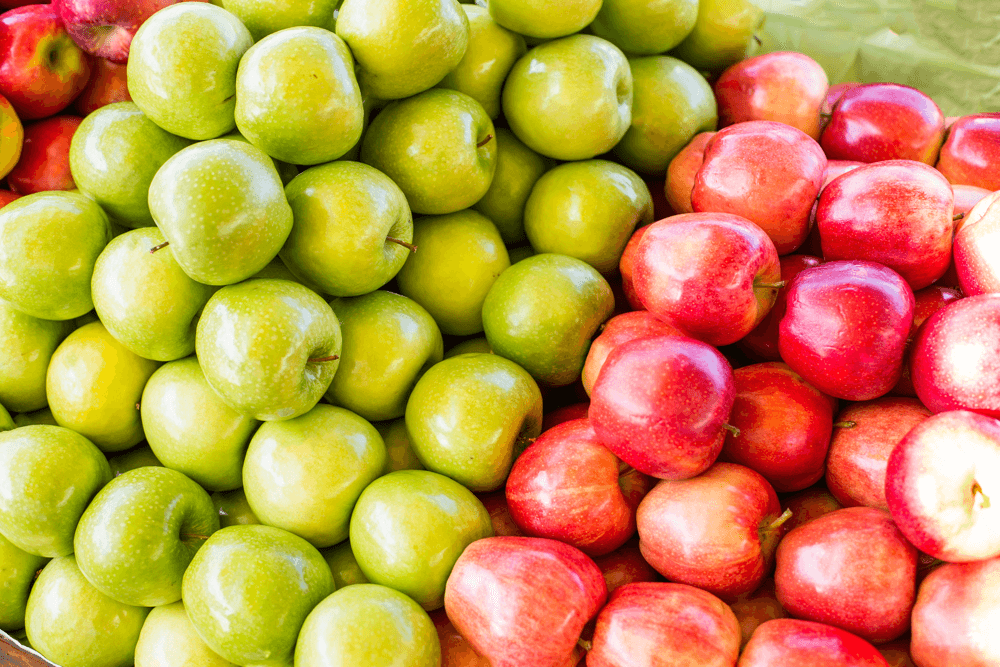

Inspiration from Daily Life
Last Updated: Nov 03 2017 by Yudi Wang

Inspiration is always the very beginning and important part of an idea. No matter how complicated the idea is, the original inspiration must be straightforward and simple enough.
Newton Isaac’s observation of an apple drop from a tree, as an obvious example to support my point of view, led him to consider why apples can drop to the ground directly rather than to other directions and inspired him to the development of his significant law of gravitation.
I can also get inspired in my daily life from my latte every morning, brunch with my friends, designer tasks, conversation with all kinds of people, fruits I eat every afternoon, places I travelled, to even sleeping at night.
I will keep posting interesting inspirations I got in my everyday’s life.
Starry Sky
Actually it’s a set of bananas I bought from Walmart.
I applied inverse effect on the original banana photo I took and it looks really fancinating.
It reminds me of the shining milky way and infinite stars living in the universe. I even start thinking that each single person, brilliant or dull, wealthy or poor, is just a single star. Maybe they have size or mass difference, they are just stars.
However, only a few of those stars can be noticed by scientists. I know it’s kind of a metaphor, but maybe those stars are trying their best to be brighter and larger.
The same as people.
People are indeed created equal. But the following stories of life should be designed by yourselves. Only those who try to create values which are meaningful to others can be memorized.
Ridge and Valley
Believe it or not, it’s my quilt.
I took this photo one day before I went to bed when I noticed that the curve of my quilt kept changing up and down.
Maybe because of the color, my quilt reminds me of those great mountains I have been visited before. The shape of the curve is just like ridges and valleys of those montains, moreover, like our lives.
Sometimes life is struggle, we need to experience those valleys. It’s hard but will not last forever. Once we just past valleys, there will always be ridges waiting for us and vice versa. The only thing we need to do is keeping motivated and staying strong during all kinds of situations and periods.
One more thing I always agree is that, there are always flat roads existing. However, mountains with ridges and valleys are always more magnificent. Don’t complain about your valleys. The next ridge is yet to come.